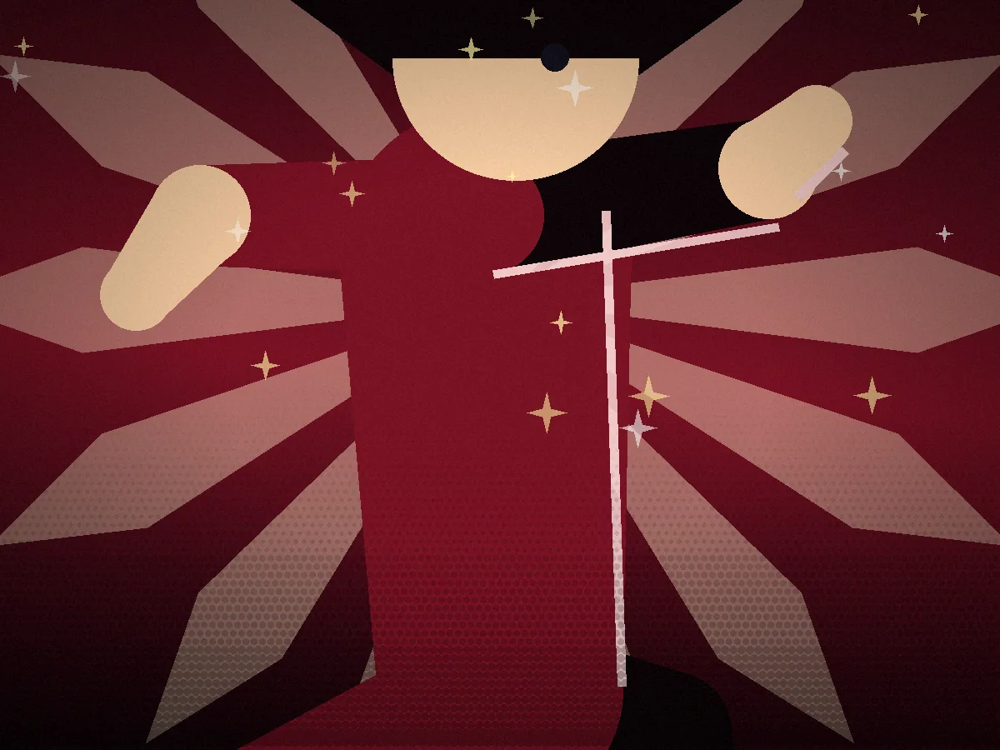
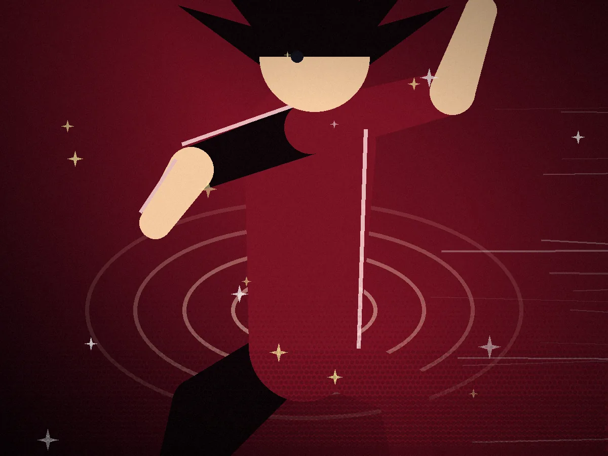

Scene one
The standoff begins.
Ten paces apart, hands on hilts, breath held. Somewhere above, one petal has already let go of its branch.

Scene two
One clash. No mercy.
Read the shoulder, not the sword. Commit a heartbeat too early and the duel is already over.

Scene three
The petal touches down.
By the time it reaches the dirt, it's already decided. Sheathe your blade and walk — or don't get up.